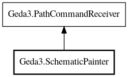

Geda3.SchematicPainter – Gschem3 Reference Manual
Packages
Gschem3
Geda3
SchematicPainter
SchematicPainter
draw_line
set_cap_type
set_color
set_dash
SchematicPainter
Object Hierarchy:

Description:
public
abstract
class
SchematicPainter
All known sub-classes:
SchematicPainterCairo
Namespace:
Geda3
Package:
Gschem3
Content:
Creation methods:
public
SchematicPainter
()
Methods:
public
abstract
void
draw_line
(
int
x0,
int
y0,
int
x1,
int
y1)
Draw a line
public
abstract
void
set_cap_type
(
CapType
cap_type)
Set the cap type to use for line ends
public
abstract
void
set_color
(
int
index)
Set the drawing color the index specified
public
abstract
void
set_dash
(
DashType
dash_type,
int
length,
int
space)
Set the dash style